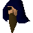

Kolodion

| Config name | arenamage1 |
| NPC id | 905 |
| Combat level | hidden |
| Options | Talk-to |
| Wander range | 1 tiles from spawn |
| Area folder | area_mage_arena |
| Defined in | scripts/areas/area_mage_arena/configs/mage_arena.npc |
Kolodion
He runs the mage arena.
Show all 1 spawn on the world map → Open in knowledge graph →
Locations
| Area | Coordinates | Level | Count | Map |
|---|---|---|---|---|
| unlabelled | 2541, 4715 | 0 | 1 | view |
Dialogue
PlayerHello there. What is this place?
KolodionDo not waste my time with trivial questions. I am the Great Kolodion, master of battle magic. I have an arena to run.
PlayerCan I enter?
KolodionHah! A wizard of your level? Don't be absurd.
KolodionI am the great Kolodion, master of battle magic, and this is my battle arena. Top wizards travel from all over RuneScape to fight here.
PlayerCan I fight here?
KolodionMy arena is open to any high level wizard, but this is no game. Many wizards fall in this arena, never to rise again. The strongest mages have been destroyed.
KolodionIf you're sure you want in?
PlayerYes indeedy.
KolodionGood, good, you have a healthy sense of competition.
KolodionRemember traveller, in my arena hand to hand combat is useless. Your strength will diminish as you enter the arena, but the spells you can learn are amongst the most powerful in RuneScape.
KolodionBefore I can accept you in, we must duel. You may not take armour or weapons into the arena.
PlayerOkay, let's fight.
KolodionI must first check that you are up to scratch.
You cannot enter the arena while carrying weapons or armour.
PlayerYou don't need to worry about that.
KolodionNot just any magician can enter, only the most powerful, the most feared. Before you can use the power of this arena, you must prove yourself against me.
PlayerNo I don't.
KolodionYour loss.
PlayerWhat's the point of that?
KolodionWe learn how to use our magic to its fullest and how to channel the forces of the cosmos into our world...
KolodionBut mainly, I just like blasting people into dust.
PlayerThat's barbaric!
KolodionNope, it's magic. But I know what you mean. So do you want to join us?
PlayerHi.
KolodionYou return, young conjurer. You obviously have a taste for the dark side of magic.
You cannot enter the arena while carrying weapons or armour.
PlayerHello, Kolodion.
KolodionHello, young mage. You're a tough one.
PlayerWhat now?
KolodionStep into the magic pool. It will take you to a chamber. There, you must decide which god you will represent in the arena.
PlayerThanks, Kolodion.
KolodionThat's what I'm here for.
PlayerHello, Kolodion.
KolodionHey there, how are you? Are you enjoying the bloodshed?
PlayerIt's not bad; I've seen worse.
PlayerI think I've had enough for now.
KolodionA shame. You're a good battle mage. I hope to see you soon.
PlayerHow can I use my new spells outside of the arena?
KolodionExperience, my friend, experience. Once you've used the spell enough times in the arena, you'll be able to use them in the rest of RuneScape.
PlayerGood stuff.
KolodionNot so good for the citizens; they won't stand a chance.
PlayerHow am I doing so far?
KolodionYou still need to train with the strike spell inside the arena before you can use it outside.
KolodionYou're experienced enough to use the strike spell anywhere.
KolodionYou still need to train with the claw spell inside the arena before you can use it outside.
KolodionYou're experienced enough to use the claw spell anywhere.
KolodionYou still need to train with the flame spell inside the arena before you can use it outside.
KolodionYou're experienced enough to use the flame spell anywhere.
Referenced in scripts
scripts/areas/area_mage_arena/scripts/kolodion.rs2scripts/areas/area_mage_arena/scripts/mage_arena.rs2